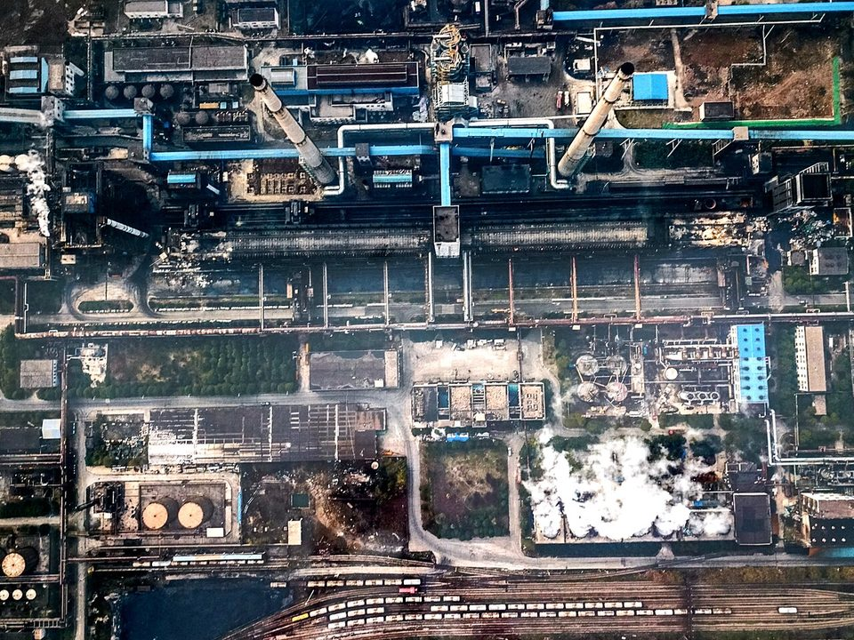
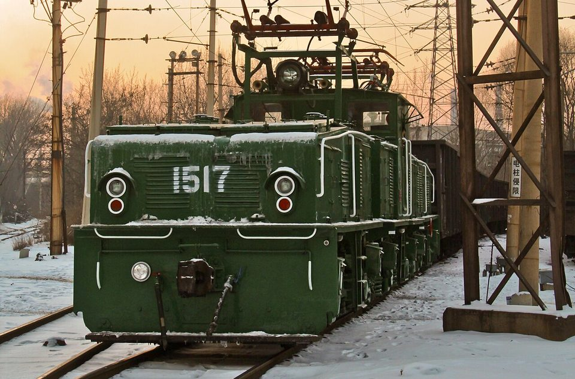
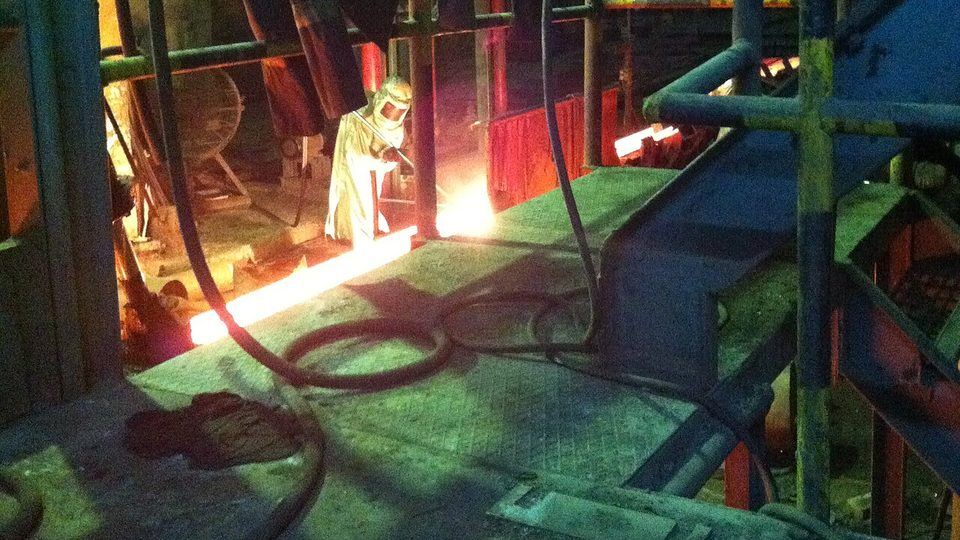

GLOBAL MILLS · CHINA · 2026.08
中國鋼鐵 8 月觀察：產量降到年內低點，出口連四月破千萬噸
鋼鐵潮流工作室 · 發布 2026.10.06

本期重點
8 月中國粗鋼產量 7,461 萬噸、年減 3.7%，日均產量降到今年最低；但鋼材出口 1,016 萬噸、年增 6.8%，連續第四個月超過千萬噸，鋼胚等半成品出口前 8 月更暴增五成。內需疲弱、鋼廠虧損，讓中國一面減產、一面把過剩的鋼往海外送。
- 產量：粗鋼日均約 241 萬噸，比 3 月高點少約 40 萬噸；統計局直言下游需求疲弱。
- 出口：年初受出口許可證新制影響，前 4 月年減近一成；5 月起回到每月千萬噸以上，8 月出口均價每噸 722 美元、年增 3.5%。
- 半成品：鋼胚等半成品出口前 8 月 1,405 萬噸、年增 52%，成為消化過剩鐵水的出口管道。
- 內需：前 8 月房地產開發投資年減 19.9%、新開工面積年減 24.8%，長材需求持續萎縮。
- 政策：出口許可證、「十五五」有序壓減產能，以及 5 月施行的 1.5:1 產能置換新規，方向是控產能、穩價格。
關鍵數字
生產：日均產量從 281 萬噸降到 241 萬噸
| 項目 | 8 月 | 年增 | 月增 | 1–8 月累計 | 年增 |
|---|---|---|---|---|---|
| 粗鋼 | 7,461 萬噸 | −3.7% | −3.0% | 6.52 億噸 | −3.1% |
| 生鐵 | 6,765 萬噸 | −3.5% | −1.0% | 5.63 億噸 | −3.1% |
| 鋼材 | 11,475 萬噸 | −5.5% | −1.5% | 9.51 億噸 | −1.7% |
上半年中國粗鋼日均產量大致維持在 270 至 280 萬噸，7、8 月連續明顯下滑，8 月降到 240.7 萬噸，比 3 月少了約 14%。統計局說明，8 月下游用鋼需求疲弱，持續壓抑鋼市。
這一輪減產主要是市場驅動，而不是行政限產：據 9 月初的市場報導，螺紋鋼每噸虧損近 70 元人民幣、熱軋卷虧損近 100 元，進入 9 月原料漲價後虧損又擴大，鋼廠缺乏增產意願。值得留意的是，前 8 月鐵礦砂進口 8.45 億噸、年增 5.5%，8 月進口 1.08 億噸、年增 3.1%，與生鐵產量年減 3.1% 的方向相反，港口庫存與進口礦比重的變化需要持續觀察。

內需：房地產仍在探底
房屋新開工面積年減近四分之一，是長材需求萎縮的根源。二手房交易回溫，但二手房不需要新建，對鋼材需求幫助有限。需求結構呈現「板強長弱」：造船、工程機械、家電等製造業支撐板材，螺紋鋼、線材等建築用鋼最弱。
出口：許可證沒有擋住量
2026 年 1 月 1 日起，約 300 類鋼品出口須憑出口合約與品質檢驗證書申請許可證，這是中國相隔 16 年再度對鋼材出口實施許可管理。新制上路初期確實造成影響：第一季出口 2,472 萬噸、年減 9.9%，前 4 月年減 9.7%，中東戰事也壓抑了部分出貨。
但從 5 月起，出口回到每月千萬噸以上，8 月更年增 6.8%。前 8 月累計 7,515 萬噸，年減幅度收斂到 3.0%。出口均價每噸 722 美元、年增 3.5%，顯示許可證制度比較像「可追溯、可管理」的工具，而不是減量閘門。去化方向也在改變：據中鋼協說明，對非洲出口持續成長，對東協則持續下滑。
半成品：鋼胚成了過剩產能的出口

海關統計的「鋼材」不含鋼胚、方胚等半成品。2026 年前 8 月，中國半成品鋼出口 1,405 萬噸、年增 52%；6 月單月 284 萬噸創下新高（年增 141.5%），8 月回落到 193 萬噸，仍年增 9.2%。若把鋼材與半成品合計，前 8 月中國約有 8,900 萬噸鋼流向海外。
鋼胚出口大增的原因有二：一是成品鋼材在各國接連遭遇反傾銷與防衛措施，業界分析指出，出口因此部分轉向半成品；二是國內需求不足，鋼廠把過剩的鐵水煉成鋼胚出口，以消化產能、對沖內需疲弱。這也意味著中國的過剩產能，正以鋼胚形式轉移到海外軋鋼廠。
官方政策：從控產量到控產能
| 時間 | 政策 | 重點 |
|---|---|---|
| 2025-12 | 2026–2030 年持續調控粗鋼產量 | 「十五五」期間延續產量調控與出口管理 |
| 2026-01-01 | 鋼材出口許可證 | 約 300 類鋼品，憑出口合約與品質檢驗證書申請 |
| 2026-03 | 國家發改委：有序壓減鋼鐵產能 | 納入「十五五」規劃，治理「內卷式」競爭，目標是供需平衡、提高企業獲利 |
| 2026-05-18 | 工信部新版《鋼鐵行業產能置換實施辦法》 | 置換比例提高到 1.5:1；禁止殭屍、閒置產能參與置換；方案有效期 24 個月；兩年過渡期後產能只能透過兼併重組轉移；不銹鋼感應爐納入管理 |
政策主軸已從過去的「平控產量」轉向「壓減產能」。產能置換 1.5:1 意味著每新建 1 噸，就要淘汰 1.5 噸舊產能，加上禁止單純買賣產能指標，中長期將推動產能淨減少與兼併重組。短期內，鋼廠虧損與需求疲弱才是讓產量下降的主要力量。
對台灣鋼鐵業的意涵
- 減產有助穩定亞洲鋼價。 中國粗鋼日均產量降到 241 萬噸，出口均價年增 3.5%，有助支撐亞洲熱軋、鍍面鋼板報價。
- 出口壓力仍在。 每月千萬噸的鋼材出口加上鋼胚，仍是亞洲市場最大的供給壓力。對東協出口下滑，對台灣在東南亞的競爭是好消息，但非洲、中東等市場的競爭更激烈。
- 鋼胚出口改變競爭型態。 低價中國鋼胚讓海外軋鋼廠以更低成本生產長材，台灣長材廠在出口市場面臨間接競爭。
- 內需結構與台灣相似。 中國「板強長弱」與台灣營建業住宅弱、製造業與廠房撐住的格局相近，長材廠承受的壓力最大。
觀察重點
- 10 月中旬公布的 9 月出口，能否延續每月千萬噸的水準。
- 10 月 20 日前後公布的 9 月粗鋼產量，日均產量是否續降至 240 萬噸以下。
- 第四季是否出現產量調控加碼，以及冬季供暖季的環保限產。
- 鋼胚出口是否引發東南亞、非洲等地的新貿易防衛措施。
- 鐵礦砂進口與港口庫存的變化，以及鋼廠虧損能否收斂。
延伸閱讀
資料來源
- China's crude steel output down 3.1 percent in January–August 2026（SteelOrbis）
- China's crude steel output down 3.1 percent in January–July 2026（SteelOrbis）
- China reduced steel output by 3% y/y in 1H2026（GMK Center）
- National Steel Production in May 2026（SMM）
- China's Crude Steel Production at 83.63 Million mt in April（SMM）
- NBS: China's Q1 crude steel output slips 4.6% YoY（Mysteel）
- NBS: China's Jan–Feb crude steel output falls 3.6% on year（Mysteel）
- 中鋼協：8 月鋼材出口 1,015.5 萬噸、年增 6.8%（Webull 轉載）
- China Aug steel exports top 10 Mt for 4th month（SXCoal）
- China's steel exports fell by 4.4% y/y in January–July（GMK Center）
- China's steel exports down 9.7% in Jan–Apr 2026（SteelOrbis）
- GACC: China's Q1 steel exports drop 10% YoY（Mysteel）
- China's semis exports up 52.07 percent in January–August 2026（SteelOrbis）
- GACC: China's semis exports hit record high in June（Mysteel）
- China's iron ore imports increase by 5.5 percent in January–August 2026（SteelOrbis）
- 2026 年 1–8 月全國房地產市場基本情況（國家統計局，2026-09-15）
- 「金九」鋼市旺季需求兌現幾何？（騰訊新聞，2026-09-07）
- China Steel Export Licenses 2026（IndexBox）
- China to curb steel capacity in 2026, says NDRC（Mysteel）
- 鋼鐵行業迎重大政策：新版產能置換辦法（證券時報）
內容僅供產業資訊參考，不構成投資建議。新聞版權屬原出處所有。